El proyecto PGDR, de cero a sustentación
Una sola plataforma para entender y defender todo el proyecto: el enunciado, el SRS, el SAD con el modelo 4+1, el ATAM y los diagramas. Cualquier ID que veas en naranja (por ejemplo DA-ARQ-07) se puede tocar para ver qué significa en los documentos.
El proyecto en 60 segundos
Una organización gubernamental tiene ocho sistemas independientes: alertas y monitoreo, GIS, hospitalarios, recursos, identificación de personas, administrativos y financieros, proyectos de infraestructura y notificación. Cuando ocurre un desastre, cada uno conoce una parte de la situación y ninguno ve el todo.
La PGDR no reemplaza esos sistemas (RST-001). Es una capa de coordinación e integración que los conecta, mantiene una visión común de la situación (COP) y sostiene el ciclo completo del desastre, desde la alerta hasta el proyecto de reconstrucción. Está diseñada para seguir funcionando justo cuando el entorno se degrada.
El enunciado lo dice así: el objetivo es diseñar y justificar una arquitectura, no replicar Sahana Eden ni construir un sistema completo de emergencias.
Ruta de estudio sugerida
- Fundamentos: los conceptos que usa todo el proyecto (45 min).
- Enunciado y SRS: qué se pidió y cómo se volvió verificable.
- Modelo 4+1 e integración: el corazón del diseño. Complétalo con los diagramas interactivos.
- APIs, decisiones y las tres estrategias.
- ATAM: riesgos y compromisos.
- Simuladores, luego guion, preguntas del jurado y quiz.
Las cinco responsabilidades esenciales (SRS 2.1)
Los números que tienes que saber de memoria
Cómo se conectan los documentos
La columna vertebral es la trazabilidad: cada decisión del SAD cita un atributo del SRS (RST-008) y el ATAM recorre esa cadena en sentido inverso. En la sección Trazabilidad puedes navegarla.
Fundamentos desde cero
Todo lo que el jurado da por sabido. Cada concepto trae una analogía y dónde aparece en la PGDR.
Conceptos de arquitectura
Arquitectura de software
Son las decisiones estructurales difíciles de cambiar: en qué partes se divide el sistema, cómo se comunican, dónde viven los datos y cómo se despliega. No es el código: es lo que determina si el sistema será disponible, escalable o seguro.
Como el plano estructural de un edificio: puedes cambiar los muebles, pero no las columnas.
Atributo de calidad
Propiedad medible que determina si el sistema es aceptable: disponibilidad, rendimiento, escalabilidad, seguridad, modificabilidad, etc. (ISO 25010). Los requisitos funcionales dicen qué hace el sistema; los atributos, qué tan bien.
Escenario de calidad (6 partes)
Fuente → estímulo → artefacto → entorno → respuesta → medida de respuesta. Convierte "debe ser disponible" en algo que se puede probar.
Táctica y patrón
Una táctica es una decisión de diseño que mejora un atributo concreto: límite de espera, reintento, réplica. Un patrón es una solución estructural recurrente que agrupa tácticas: bandeja de salida, puertos y adaptadores.
SRS, SAD, ATAM
SRS (ISO/IEC/IEEE 29148): qué debe cumplir el sistema. SAD: cómo está estructurado y por qué. ATAM (SEI, Bass/Clements/Kazman): evaluación de si la arquitectura realmente cumple, con riesgos y compromisos.
Modelo 4+1 (Kruchten)
Cinco vistas, cada una para un interesado distinto. Lógica: qué abstracciones hay. Procesos: qué corre en paralelo y cómo se comunica. Desarrollo: cómo se organiza el código. Física: en qué nodos vive. +1 escenarios: casos de uso que atraviesan y validan las otras cuatro.
Percentil 95 (p95)
El 95 % de las peticiones responde por debajo del umbral. Se usa en lugar del promedio porque el promedio esconde la cola lenta, que es justo lo que sufre el operador de la sala de crisis.
RTO y RPO
RTO (Recovery Time Objective): cuánto puedes tardar en volver a operar. RPO (Recovery Point Objective): cuántos datos, medidos en tiempo, puedes perder.
Síncrono y asíncrono
Síncrono: quien llama espera la respuesta, como una llamada telefónica. Asíncrono: deja un mensaje y sigue, como un correo. Lo asíncrono desacopla en el tiempo y absorbe picos.
Consistencia final
Distintas partes del sistema llegan al mismo estado, pero no en el mismo instante. Se acepta a cambio de desacoplamiento y rendimiento.
Clasificación de criticidad: C1, C2 y C3
Es la idea más reutilizada del proyecto (SRS 5.1). No todo merece la misma protección: los umbrales, los compartimentos y el orden de degradación salen de aquí.
| Clase | Definición | Incluye | Disponibilidad |
|---|---|---|---|
| C1 Crítica | Su indisponibilidad impide coordinar la emergencia. | Registro y consulta de eventos (GDE), ingesta de alertas externas (INT), registro y sincronización de evaluaciones (EVD, MOV), alertas críticas (NOT), consulta y asignación de recursos (GRE), tareas (COR), autenticación y autorización (SEG), auditoría (AUD). | 99,95 % |
| C2 Importante | Degrada la operación pero no la impide. | Consolidación e indicadores de daños, tableros y mapas (VIS), personas afectadas (GPA), integraciones de consulta no críticas. | 99,5 % |
| C3 Diferible | Se puede interrumpir durante la emergencia. | Consulta pública, reportes de reconstrucción (REC), exportaciones y reportes analíticos, administración de catálogos (ADM). | — |
Patrones y tácticas que usa la PGDR
Estas tarjetas son tu glosario técnico. Si entiendes estas veinte ideas, entiendes el SAD.
Puertos y adaptadores (hexagonal)
El núcleo de negocio declara interfaces (puertos) y las piezas externas las implementan (adaptadores). El núcleo nunca conoce protocolos ni formatos externos.
Un enchufe estándar en la pared y un adaptador distinto para cada país.
Modelo canónico
Un idioma interno único. Cada adaptador traduce el formato externo a este modelo en el borde y nada entra sin traducir.
Todas las delegaciones hablan su idioma, pero en la mesa se traduce todo al español.
Bus de eventos de dominio
Un módulo publica un hecho ("evento reclasificado") y los interesados lo reciben sin que el productor sepa quiénes son.
Un canal de radio: quien transmite no sabe cuántos escuchan.
Bandeja de salida transaccional (outbox)
El cambio de negocio y el mensaje a enviar se guardan en la misma transacción. Otro proceso publica después y reintenta si falla.
Escribir la carta y meterla en el buzón de salida de la oficina en un solo gesto; el cartero pasa después.
Idempotencia
Repetir una operación produce el mismo efecto que hacerla una vez. Se logra con una clave de idempotencia que identifica el hecho y no el envío.
El botón del ascensor: oprimirlo diez veces no llama diez ascensores.
Límite de espera (timeout)
Toda llamada tiene un tiempo máximo explícito. Sin él, un sistema lento te deja colgado indefinidamente.
Reintento con espera creciente y variación aleatoria
Si falla, se espera 2 s, luego 4 s, luego 8 s, con una variación aleatoria de ±20 % para que no todos reintenten al mismo tiempo.
Interruptor de circuito (circuit breaker)
Cuenta las fallas. Si superan el umbral, se abre y las llamadas fallan de inmediato durante un reposo. Luego pasa a semiabierto, deja pasar una prueba y, si funciona, se cierra.
El breaker eléctrico de tu casa: corta antes de que se queme todo.
Compartimentos (bulkhead)
Se divide la capacidad en compartimentos estancos, de modo que si uno se inunda los demás siguen a flote.
Los mamparos de un barco.
Caché de última información conocida
Se guarda la última respuesta buena de cada fuente con su hora. Si la fuente cae, se muestra ese dato advertido como desactualizado.
Cola persistente y mensajes fallidos
La cola guarda el mensaje en disco antes de confirmar, así que un consumidor caído no pierde nada. Lo que no se puede procesar va a un repositorio de mensajes fallidos con su motivo para reprocesarlo después.
Separación escritura / lectura (CQRS con proyecciones)
Las escrituras van al almacén del módulo dueño. Las lecturas pesadas (tableros, consulta pública, históricos) salen de proyecciones precalculadas desde el bus.
Control de admisión y degradación selectiva
Si no hay capacidad para todos, se rechaza de forma ordenada lo menos crítico primero en lugar de responder mal a todos.
Réplica por mayoría y zonas
Una zona de disponibilidad es un centro de datos independiente dentro de una región. Con tres zonas y confirmación por mayoría (2 de 3), perder una no pierde datos confirmados.
Confianza cero
Estar dentro de la red no da permisos. Cada componente tiene identidad propia y cada llamada se autentica en ambos sentidos.
Credenciales de vida corta
El token dura poco (5 min de referencia) y cada componente lo valida localmente. Revocar es fácil: se publica una lista de denegación hasta que expire.
Cadena de resúmenes y sello externo
Cada registro de auditoría incluye el hash del anterior; alterar uno rompe la cadena desde ese punto. Un sello de tiempo guardado fuera del alcance del administrador impide reescribir la cadena completa.
Borrado criptográfico
Cada persona tiene su propia clave. "Borrar" sus datos es destruir la clave: el histórico queda, pero ilegible.
Despliegue progresivo y expandir/contraer
La versión nueva recibe primero una fracción pequeña del tráfico; si empeora el error o la latencia, se revierte sola. Los cambios de esquema se hacen en dos fases para que las dos versiones convivan.
Cómputo sin estado
Ninguna instancia guarda en memoria algo que no pueda perderse. Así cualquier instancia atiende cualquier petición y crecer es agregar instancias.
Qué se pidió
Plataforma para la Gestión de Desastres y Reconstrucción. El objetivo no es replicar Sahana Eden ni desarrollar un sistema completo de emergencias, sino diseñar y justificar una arquitectura que resuelva los desafíos del dominio.
§1–§3 Contexto, problema y objetivo
En escenarios de gran escala aparecen seis desafíos: interoperabilidad entre sistemas, disponibilidad en situaciones críticas, escalabilidad ante picos repentinos, procesamiento en tiempo real, tolerancia a fallos y trazabilidad de la recuperación y la reconstrucción.
La organización ya tiene ocho sistemas independientes, cada uno con su tecnología y su mecanismo de integración:
El ejemplo del enunciado: el sistema de emergencias sabe que una zona está afectada, el GIS conoce su ubicación, un hospital sabe cuántas personas atendió y otro sistema sabe qué recursos hay. Nadie tiene la visión unificada. Objetivo general: una arquitectura altamente disponible, escalable e interoperable para el ciclo completo del desastre. (IE-018, el proveedor de identidad, lo agregó el equipo en el SRS.)
§4 Alcance funcional
4.1 Gestión de desastres (módulo central)
Registrar, clasificar, monitorear y cerrar eventos: terremoto, inundación, incendio, deslizamiento, huracán, erupción y otros. Se crean de forma manual o automática desde alertas. Hay 12 datos mínimos por evento. Los tipos no deben estar fijos en el código. El ciclo de vida (Detectado, Registrado, En evaluación, En atención, En recuperación, En reconstrucción, Cerrado) no es igual para todos. Niveles Nivel_1 Bajo a Nivel_4 Crítico, reclasificables con trazabilidad. Área por coordenadas, polígonos, municipios, barrios, zonas de riesgo o GIS, conservando su evolución (a las 10:00 eran 3 barrios; a las 14:00, 7).
4.2 Evaluación de daños
Viviendas, hospitales, escuelas, puentes, carreteras, redes. Reportes con fotos, documentos, coordenadas y nivel de daño en categorías configurables (Sin daño a Destrucción total), con criterios distintos por tipo de activo. Registro preliminar sin evento asociado. Operación parcialmente offline: descargar, ir sin señal, registrar, tomar fotos, recuperar conexión y sincronizar, contemplando conflictos de sincronización, validación y duplicados.
4.3 Personas afectadas
Personas, familias, necesidades, ubicación, refugios, atención recibida y solicitudes de ayuda, protegidas con seguridad y control de acceso.
4.4 Recursos
Visión consolidada de alimentos, agua, medicamentos, vehículos, maquinaria, equipos de rescate, personal, refugios y donaciones. Solicitud y asignación por organismos autorizados.
4.5 Coordinación de organismos
Asignar responsabilidades, crear tareas, priorizar, compartir información, registrar avances, generar alertas y mantener el historial.
4.6 Reconstrucción
Convertir la evaluación de daños en proyectos con presupuesto, financiación, responsable, contratista, cronograma, avance, costos, documentación, evidencias y estado.
§5 Escenarios de funcionamiento
| Escenario | Qué pasa | Qué exige a la arquitectura |
|---|---|---|
| EO-A Inicio de emergencia | El monitoreo detecta un terremoto; se crea un evento preliminar y se notifica; el GIS aporta las zonas; los organismos lo pasan a "Activo". | Ingesta automática rápida, notificación y confirmación humana. |
| EO-B Aumento repentino de usuarios | Miles de ciudadanos y funcionarios entran a la vez. | Escalar solo lo necesario y mantener las funciones críticas. |
| EO-C Fallo de sistema externo | El hospitalario cae. | La plataforma sigue funcionando y sincroniza al volver. |
| EO-D Evaluación distribuida | Cientos de equipos reportan con fotos al tiempo. | Procesar sin afectar la coordinación. |
| EO-E Reconstrucción | 30 escuelas y 12 puentes a intervenir. | Proyectos, presupuestos y auditoría de cambios. |
Reprodúcelos paso a paso en Simuladores.
§6 Atributos de calidad prioritarios
Disponibilidad
99,95 % para servicios críticos.Escalabilidad
De 1.000 a 10.000 o más usuarios concurrentes sin rediseño.Rendimiento
Consultas en menos de 2 s, registro de eventos en menos de 3 s, alertas críticas en menos de 5 s.Resiliencia
Timeouts, reintentos, circuit breakers, colas, asincronía, degradación controlada y recuperación automática.Recuperación
Poder recuperar la plataforma tras una falla grave.Interoperabilidad
REST, mensajería, eventos, webhooks y formatos de intercambio; acoplamiento mínimo.Seguridad
Autenticación, autorización, roles, cifrado, auditoría, sesiones, datos personales y control por organización.Trazabilidad
Quién → qué hizo → cuándo → sobre qué → resultado. Sobre todo en recursos, presupuestos, proyectos, personas y niveles.Modificabilidad
Nuevos tipos de desastre, organismos e integraciones sin modificar significativamente lo existente.§8 Restricciones · §9 Soluciones existentes · §10 Entregables
Las nueve restricciones del §8 quedaron en el SRS como RST-001 a RST-009. La más importante para defender el formato de la entrega es la última: no se impone tecnología y esta entrega es agnóstica. El §9 pide analizar Sahana Eden (capacidades, componentes, tecnologías, integración, fortalezas, limitaciones, decisiones) y proponer una arquitectura alternativa o complementaria.
| Entregable del §10 | Dónde se responde |
|---|---|
| Requisitos funcionales y atributos de calidad | SRS cap. 3 y 5 |
| Análisis de una solución existente | SRS cap. 11 (Sahana Eden, Ushahidi, DHIS2) |
| Diagrama de contexto | SRS; ver SRS |
| Diagrama 4+1 | Modelo de vistas 4+1; ver Modelo 4+1 |
| Modelo de integración con sistemas externos | SAD cap. 1–10 |
| Diseño de APIs y eventos | SAD cap. 11–16 |
| Decisiones arquitectónicas | SAD cap. 17 |
| Estrategias de seguridad, resiliencia y escalabilidad | SAD cap. 18, 19 y 20 |
| Validación de atributos (ATAM) | Documento ATAM |
| Diapositivas (15–20 min, sustentación individual) | 31 láminas; ver Guion |
Especificación de requisitos
El SRS convierte el enunciado en 306 elementos verificables. Sigue la norma ISO/IEC/IEEE 29148 y el modelo de calidad ISO/IEC 25010.
Convenciones: cómo leer cualquier ID
Formato <TIPO>-<MÓDULO|ATRIBUTO>-<NNN>. Los identificadores son únicos, inmutables y no se reutilizan; si un requisito se elimina, queda marcado OBSOLETO.
| Prefijo | Significa | Cantidad |
|---|---|---|
| RF-GDE-001 | Requisito funcional del módulo GDE | 184 |
| AC-DIS-001 | Atributo de calidad: DIS disponibilidad, ESC escalabilidad, REN rendimiento, RES resiliencia, RCP recuperación, INT interoperabilidad, SEG seguridad, TRZ trazabilidad, MOD modificabilidad, USA usabilidad, OBS observabilidad | 66 |
| IE-010 | Interfaz externa (IE-001 a 004 de usuario, IE-010 a 018 con sistemas, IE-020 a 022 de comunicación) | 16 |
| RN-001 | Regla de negocio | 15 |
| RST-001 | Restricción | 12 |
| SUP-001 | Supuesto (con el riesgo si no se cumple) | 8 |
| EO-A | Escenario operacional | 5 |
| ACT-01 | Actor | 13 |
| EXC-001 | Exclusión de alcance | 5 |
Reglas de redacción: verbos normativos DEBE (obligatorio), DEBERÍA (recomendado; su omisión se justifica por escrito) y PODRÁ (opcional). Un requisito equivale a un comportamiento. Están prohibidos los términos no medibles (rápido, amigable, robusto). Cada requisito lleva criterio de verificación, prioridad A (Must), M (Should) o B (Could), y Origen: la sección del enunciado o "Derivado", indicando de qué deriva.
Alcance y exclusiones
Actores (13)
El ambiente operativo (AMB-01 a 05) incluye navegadores con conectividad estable, móviles con conectividad intermitente o nula, externos heterogéneos fuera de control, operación 24×7 con picos impredecibles y datos personales sensibles.
Diagrama de contexto
Muestra la PGDR como una caja negra con los 11 actores humanos y los sistemas externos. Las flechas indican la información que entra y sale. IE-013, IE-015 e IE-016 son bidireccionales; IE-017 y ACT-13 solo reciben.
Los 14 módulos funcionales y sus 184 requisitos
| Módulo | Propósito | RF | Atributos dominantes (SRS 10.2) |
|---|---|---|---|
| ADM | Tipos, estados, clasificaciones, categorías, organismos y reglas como configuración, sin tocar código. | 15 | AC-MOD-001, AC-MOD-002, AC-MOD-004 |
| GDE | Componente central: registrar, clasificar, monitorear y cerrar eventos. | 25 | AC-DIS-001, AC-REN-002, AC-TRZ-001 |
| GEO | Área del desastre y su evolución espacial y temporal. | 8 | AC-REN-006, AC-INT-001 |
| EVD | Recopilar, validar y consolidar daños. | 22 | AC-ESC-004, AC-RES-005 |
| MOV | Captura sin conexión y sincronización. | 11 | AC-RES-009, AC-USA-002, AC-REN-005 |
| GPA | Personas, familias, necesidades y refugios. | 13 | AC-SEG-001, AC-SEG-003, AC-SEG-004 |
| GRE | Visión consolidada, solicitud y asignación de recursos. | 12 | AC-DIS-001, AC-REN-001 |
| COR | Tareas, responsabilidades y avances entre organismos. | 11 | AC-DIS-001, AC-USA-001 |
| NOT | Generar y entregar alertas. | 8 | AC-REN-003, AC-RES-005 |
| INT | Interoperar con los externos minimizando el acoplamiento. | 18 | AC-INT-001 a 006, AC-RES-002 a 004 |
| REC | Convertir daños en proyectos con presupuesto y avance. | 11 | AC-TRZ-001, AC-TRZ-005 |
| VIS | Mapas, tableros, líneas de tiempo, reportes y la vista pública. | 9 | AC-ESC-005, AC-USA-004 |
| SEG | Autenticación, autorización, sesiones y protección de datos. | 12 | AC-SEG-001 a 007 |
| AUD | Registro inmutable de quién hizo qué. | 9 | AC-TRZ-001 a 005 |
Explora cada requisito con su criterio de verificación. Filtra por módulo o busca texto:
Atributos de calidad (66)
Cada uno con métrica, umbral, condición de medición, método de verificación, prioridad y origen. Filtra por atributo:
Reglas de negocio, restricciones y supuestos
Reglas de negocio (15)
Las más preguntadas: RN-003 (el evento automático nace preliminar), RN-007 (nunca se sobrescribe el histórico), RN-008 (solo cuentan las evaluaciones validadas), RN-009 (no asignar dos veces la misma unidad), RN-013 (idempotencia por id de dispositivo) y RN-014 (auditoría inmutable).
Restricciones (12) con su impacto arquitectónico
Supuestos (8) y el riesgo si fallan
Interfaces externas
Sahana Eden y por qué no basta
Nació en Sri Lanka tras el tsunami de 2004. Es un kit de desarrollo rápido de aplicaciones humanitarias, con licencia MIT, desplegado en Haití, Pakistán, Venezuela, Colombia, Japón y Chile. Desde mayo de 2025 la rama principal es Eden ASP, reducida a gestión de casos; la versión completa quedó como Sahana EDEN Legacy.
Componentes y tecnología
Ejecución y datos
web2py sobre Python con PyDAL; PostgreSQL con extensión geoespacial; un único almacén compartido por todos los módulos.Marco S3
Abstracción de recurso, CRUD, S3XML, control de acceso, cartografía, mensajería y sincronización. Del modelo declarativo salen la persistencia, los formularios y el REST.Presentación y configuración
Un controlador por módulo; personalización en cascada de plantillas de despliegue en Python.Integración en Eden
REST derivado del esquema de tablas (síncrono), S3XML con traducción por XSLT, sincronización por lotes entre instalaciones de Eden, mensajería multicanal con SAMBRO (CAP 1.2) y cliente móvil con sincronización posterior. Intentó adoptar la familia EDXL y el desarrollo se detuvo porque los clientes lo encontraron demasiado complejo; solo CAP logró adopción amplia. De ahí sale RF-INT-005: cada integración declara su formato en lugar de imponer uno solo.
Cobertura por módulo
Cobertura alta en GEO, GPA, GRE, NOT y SEG. Parcial en ADM (configuración en código), GDE (sin ciclo de vida configurable), EVD (sin versionado íntegro), MOV (sin política de conflictos), COR (sin vista consolidada), INT, REC (sin la cadena daño→proyecto→presupuesto), VIS (sin vista pública independiente) y AUD (sin inmutabilidad verificable).
Limitaciones y cómo responde la PGDR
Eden se diseñó como aplicación que una organización despliega por su cuenta; la PGDR es una capa de coordinación entre sistemas que ya existen. De esa diferencia salen casi todas las limitaciones.
Decisiones de Eden: qué adoptamos y qué descartamos
Comparación con otras plataformas
| Criterio | Sahana Eden | Ushahidi | DHIS2 |
|---|---|---|---|
| Dominio | Desastres, ciclo completo | Reportes ciudadanos y mapeo; cobertura baja | Salud pública; no cubre el ciclo |
| API | REST derivado del esquema | REST, cliente web separado | REST estable, versionado y con descripción formal |
| Interoperabilidad | Formato propio + XSLT; CAP | Ingesta desde SMS, correo, redes y sindicación | Intercambio de datos y metadatos, estándares de salud |
| Despliegue | Aplicación única | Servicio y cliente separados, contenedores | Contenedores y orquestación |
| Lo que toma la PGDR | El modelo de dominio y las decisiones adoptadas | Ingesta desde canales de terceros con normalización posterior | La disciplina de contrato: interfaz estable y versionada |
Modelo 4+1
Las vistas lógica y de escenarios se derivan casi literalmente del SRS. Las de procesos, desarrollo y física contienen decisiones derivadas: propuestas que satisfacen los atributos, marcadas con D en la trazabilidad. Ningún diagrama nombra productos (RST-009).
Vista lógica A · Modelo de dominio canónico
Elementos: clases del dominio. Flechas: --> asociación, *-- composición, ..> dependencia. Lo que se modela es el modelo canónico interno (RF-INT-004), no el dominio de los sistemas fuente.
¿Por qué Catalogo es una clase?
AC-MOD-001 y AC-MOD-004 exigen que tipos, estados, niveles y categorías se modifiquen por configuración sin desplegar. Si fueran valores fijos dentro de Evento, el atributo sería inalcanzable.¿Por qué SistemaIntegrado con dependencia débil?
AC-INT-002 y RF-INT-004: ningún componente de negocio puede depender del formato o protocolo propietario de un externo.¿Por qué Evaluación → Proyecto?
EO-E define que los reportes de daños son el insumo de los proyectos de reconstrucción (RF-REC-001).Evento en el centro
Casi todo se asocia a un evento (RN-001): zonas, evaluaciones, tareas, alertas, solicitudes y personas.Vista lógica B · Descomposición modular
Los 14 módulos en 4 grupos alineados con las responsabilidades del SRS 2.1: frontera (INT, VIS, MOV), situación, es decir unificar (GDE, GEO, EVD), atención, es decir coordinar (GPA, GRE, COR, NOT), reconstrucción (REC) y transversales (ADM, SEG, AUD). Las flechas punteadas son dependencias transversales (configuración, seguridad, traza) y se distinguen a propósito de las de flujo de información. GDE es el centro de gravedad.
Vista de procesos
Flechas: ==> invocación síncrona con umbral de latencia, --> mensaje asíncrono, -.-> lectura de estado. La decisión que estructura esta vista es AC-RES-006: aislar los recursos de ingesta masiva de campo, coordinación operativa y consulta pública.
Vista de desarrollo
Cinco capas con regla de dependencia: toda flecha apunta hacia abajo. Una flecha ascendente sería una violación visible.
Vista física
Tipos de nodo por zona de disponibilidad. Todos los canales van cifrados (IE-020). Se describen tipos de nodo, no despliegues concretos.
Vista +1 · Escenarios
Cinco guiones, uno por escenario del enunciado. Cada uno atraviesa la vista lógica (qué abstracciones participan) y la de procesos (qué unidades y canales). Avanza paso a paso:
Correspondencias entre vistas
Esto es lo que convierte cinco diagramas en un modelo 4+1. No hay correspondencia 1:1 entre lógica y desarrollo ni entre procesos y física, como anticipa el propio Kruchten.
| Abstracción lógica | Se ejecuta en (procesos) | Se construye como (desarrollo) | Reside en (física) |
|---|---|---|---|
| Evento, Tarea, Recurso | Servicios de coordinación · C1 | gde, cor, gre sobre el canónico | Nodos de coordinación en todas las zonas |
| Evaluación, Evidencia | Conciliación + validación | evd y mov | Nodos de ingesta y trabajadores |
| Persona, Familia, Refugio | Personas afectadas + adaptador hospitalario | gpa y adaptador de capa 4 | Coordinación, con control de acceso |
| Alerta | Motor de alertas + cola de entrega | not y adaptadores de salida | Trabajadores con salida a notificación |
| Proyecto de reconstrucción | Servicio de reconstrucción · C3 | rec y adaptadores financieros | Coordinación, sin exigencia de doble zona |
| Catálogo | Motor consultado por todos | Subsistema propio en capa 2 | Almacén operacional replicado |
| Sistema integrado | Adaptadores con circuito | Un adaptador por sistema, capa 4 | Ingesta y trabajadores |
| Registro de auditoría | Consumidor de auditoría del bus | aud | Almacén solo anexado, separado |
| Proyección pública | Proyector de vistas | vis | Segmento público aislado |
Diagramas interactivos
Ocho diagramas del proyecto generados con Archify a partir de especificaciones JSON y validados con sus propias reglas: esquema, rutas sin cruces ni etiquetas encimadas y legibilidad en pantalla de escritorio. Cada uno es un visor completo, con recorridos guiados, búsqueda, foco por nodo, modo presentación y tema claro u oscuro.
Cómo usar el visor (la interfaz del visor está en inglés)
- Guided views · Play story: recorre los capítulos que definí para cada diagrama (por ejemplo "Ruta crítica C1" o "Operación degradada"). Úsalos en la sustentación para contar el diagrama por partes.
- Clic en un nodo o flecha: resalta sus relaciones y atenúa el resto. PATH traza la ruta entre dos nodos, MAP muestra el minimapa y LENS filtra por tipo.
- Present: modo presentación a pantalla completa. Dark / Light: cambia el tema. La rueda del ratón o los botones + y − hacen zoom.
- Export descarga PNG o SVG en la copia local; en la versión publicada en claude.ai las descargas están bloqueadas.
Archify solo traduce su interfaz al inglés y al chino, así que los botones del visor están en inglés; todo el contenido de los diagramas está en español. Las especificaciones están en archify/fuentes/, por si quieres editarlas y regenerar. Archify es software MIT (© 2026 tt-a1i); la licencia está en archify/LICENSE-archify.txt.
Modelo de integración
Cómo intercambia la PGDR información con IE-010 a IE-018 y con los móviles: qué mecanismo usa cada uno, qué forma tienen los mensajes y qué pasa cuando el otro lado responde tarde, responde mal o no responde.
Principios (PRI-01 a PRI-06)
Estructura del borde de integración (diagrama 1)
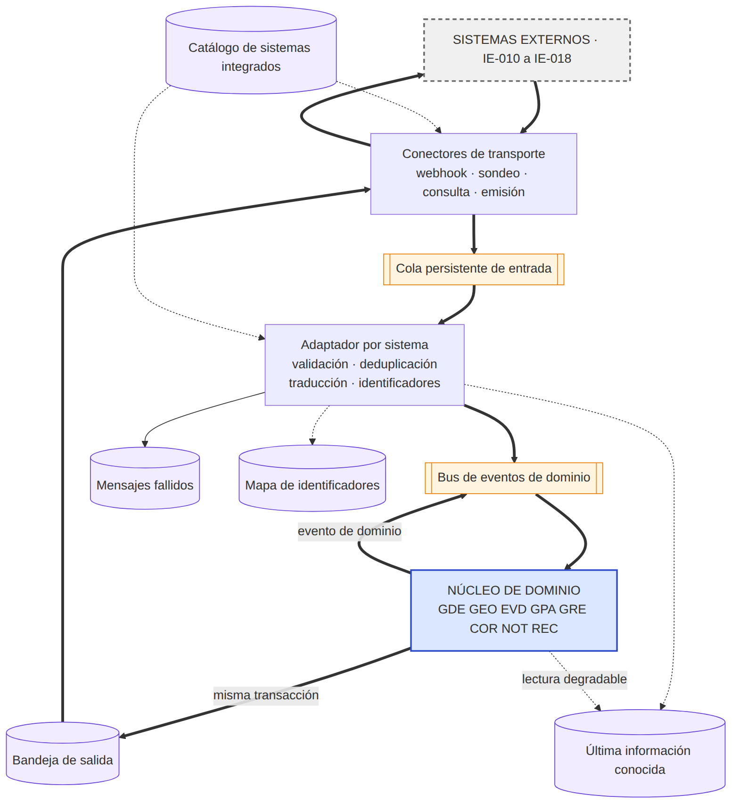
| Elemento | Responsabilidad | Requisitos |
|---|---|---|
| Conector de transporte | Habla el protocolo del externo: recibe, consulta o envía. Aplica autenticación, límite de espera y límite de tasa. No interpreta el contenido. | RF-INT-003, RF-INT-016, RF-INT-017 |
| Adaptador por sistema | Valida contra el contrato, descarta duplicados, traduce al canónico y resuelve identificadores. Única pieza que conoce el formato externo. | RF-INT-004, RF-INT-007, AC-INT-002 |
| Cola persistente de entrada | Desacopla recepción de procesamiento y absorbe picos. | AC-RES-005, AC-ESC-004 |
| Bus de eventos de dominio | Distribuye hechos sin que el productor conozca a los consumidores. | RF-INT-002, RF-GDE-013 |
| Bandeja de salida | Recoge, en la misma transacción que el cambio, lo que debe salir. | RF-INT-010, AC-RES-009 |
| Mensajes fallidos | Conserva lo no procesable con su motivo, reprocesable. | RF-INT-009 |
| Caché de última información conocida | Última respuesta válida por fuente con su marca temporal. | RF-INT-011, AC-RES-007 |
| Mapa de identificadores | Relaciona el ID propio con el de cada sistema fuente. | RF-GDE-003, RF-GPA-009 |
| Catálogo de sistemas integrados | Registro vivo: propietario, mecanismo, formato, credencial, parámetros y salud. Parametriza conectores y adaptadores. | RF-INT-005, RF-INT-006 |
| Puerto de dominio | Interfaz que el núcleo declara y el adaptador implementa. | AC-INT-003, AC-MOD-005 |
Los 7 patrones de integración
El patrón se elige con dos preguntas: ¿quién inicia el intercambio? y ¿cuánta demora tolera el consumidor?
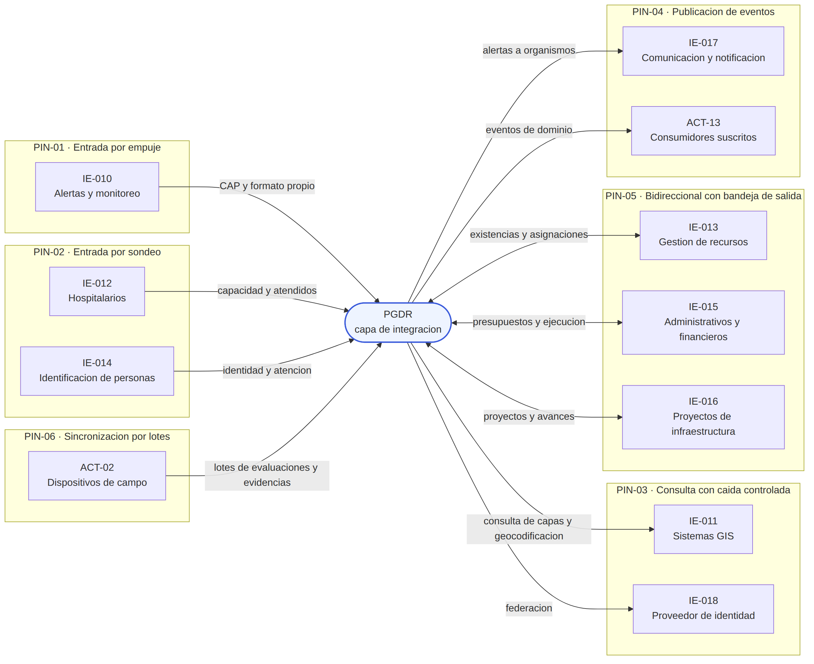
Matriz de integración: elige un sistema
Patrón, clase de criticidad, frescura máxima tolerable y comportamiento ante indisponibilidad (SAD cap. 6).
Modelo canónico y sobre de mensaje
El modelo canónico es un modelo del dominio y no una serialización del esquema de persistencia. Cubre solo lo necesario para coordinar; lo no traducido queda como bloque opaco. Todo mensaje del borde viaja en un sobre uniforme:
| Campo | Para qué |
|---|---|
| Identificador del mensaje | Único en la plataforma (RF-INT-008). |
| Clave de idempotencia | Identifica el hecho, no el envío: dos entregas producen un solo efecto (RN-013). |
| Identificador de correlación | Sigue una operación por todos los componentes (AC-OBS-002). |
| Sistema de origen | La integración en el catálogo (RF-INT-006). |
| Tipo de mensaje y versión del contrato | Determina la validación y permite convivencia de versiones. |
| Marca temporal de origen y de recepción | La diferencia es información operativa (RF-MOV-009, IE-004). |
| Nivel de confiabilidad de la fuente | Para consolidar reportes contradictorios (RF-GDE-019). |
| Clasificación de sensibilidad | Activa las reglas de datos personales (AC-SEG-004). |
| Prioridad | Lo crítico antes que lo informativo en las colas (RF-NOT-006). |
| Firma o sello de integridad | Verifica que no se alteró en tránsito. |
| Contenido canónico + bloque de origen | Lo traducido más lo que el adaptador no mapeó. |
Recorrido del adaptador de entrada (diagrama 2)
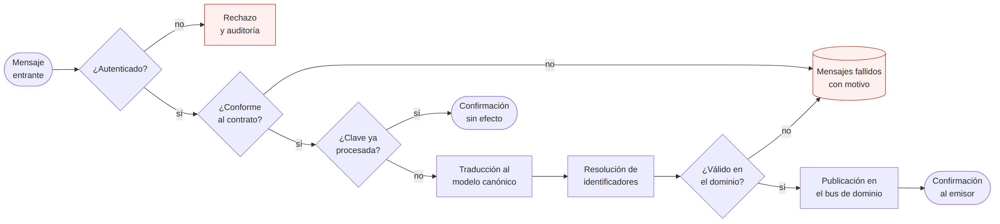
Por qué en ese orden: autenticar primero evita trabajar para un emisor no autorizado; la idempotencia evita traducir lo ya procesado; la validación semántica va al final porque necesita el mensaje en el modelo del dominio. Nada se descarta sin rastro: lo rechazado queda con su motivo y es reprocesable.
Correspondencia de identificadores
Un mismo puente puede llegar del sistema de proyectos y del GIS con IDs distintos. La plataforma asigna un ID propio, único e inmutable, y mantiene el mapa: tipo de entidad, sistema e ID de origen, método (declarado, deducido por regla o confirmado por usuario) y trazabilidad para deshacer una unificación. Las correspondencias deducidas nunca se aplican solas sobre datos personales: se presentan como posible duplicado (RF-GPA-009).
Versionado de contratos
- Versión explícita: ningún consumidor la deduce del contenido.
- Cambio compatible (agregar un campo opcional): no cambia la versión mayor, y los consumidores ignoran lo que no conocen.
- Cambio incompatible (quitar un campo, volver obligatorio uno opcional, cambiar significados): versión mayor nueva que convive con la anterior.
- Periodo de transición con aviso de obsolescencia. Contrato primero: se acuerda antes de implementar el adaptador.
Salida hacia sistemas externos: bandeja de salida (diagrama 3)
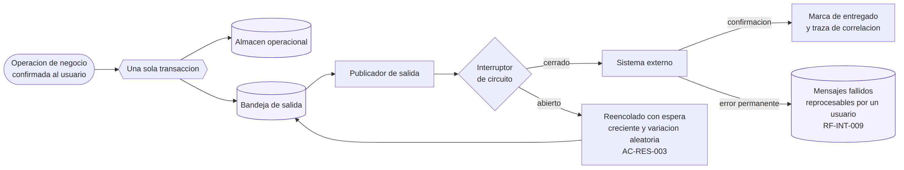
Enviar fuera de la transacción puede perder el mensaje si el proceso cae entre escribir y enviar; enviar antes de confirmar puede anunciar algo que se deshace. Reglas: orden por entidad (no global), reintento con espera creciente y variación, clave del hecho en cada envío (si el externo no deduplica, el adaptador consulta antes de escribir y queda como riesgo aceptado), error permanente a mensajes fallidos con alerta, y reconciliación sin duplicados tras el restablecimiento (AC-RCP-006).
Resiliencia del borde (TAC-01 a TAC-11)
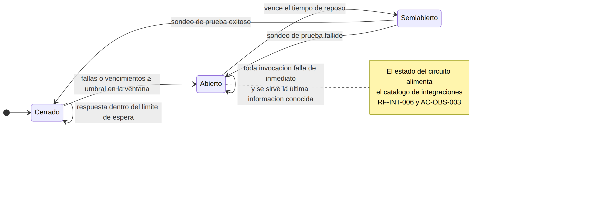
Seguridad de las integraciones (CSI-01 a CSI-10)
Observabilidad de las integraciones
Cada integración publica su estado en lugar de que alguien lo deduzca leyendo registros. Las señales son: disponibilidad, latencia en percentiles, tasa de error por tipo (distingue error del externo de error de contrato) y profundidad de colas cada 60 s; el estado del interruptor cuando cambia; la antigüedad de la caché de forma continua (es lo que muestra la interfaz); y la traza de correlación por operación.
Escenarios de integración
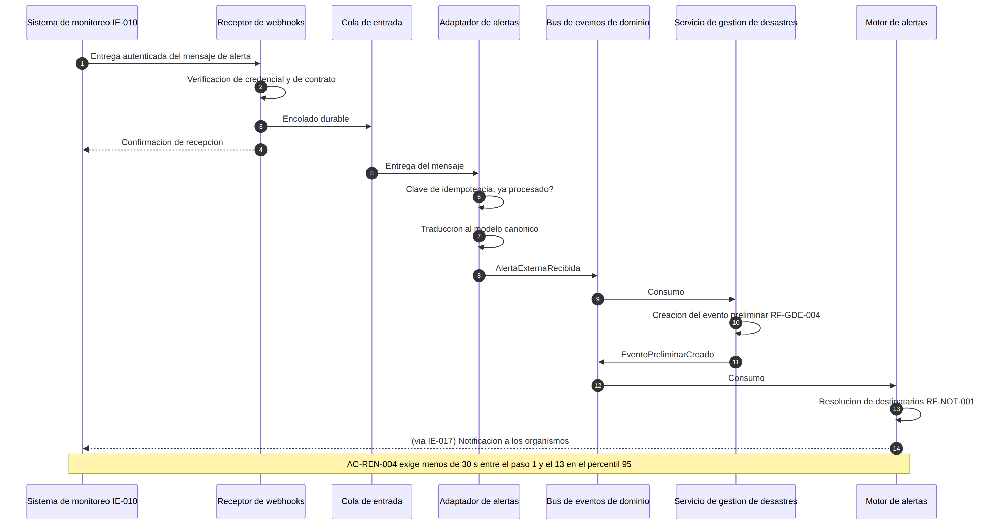
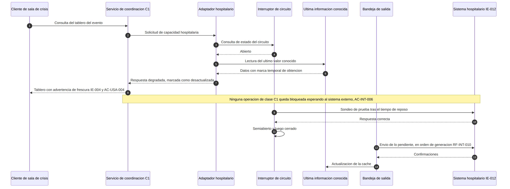
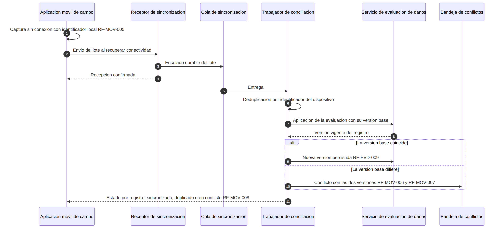
APIs y eventos de dominio
Los capítulos 1–10 definen cómo entra y sale información. Los capítulos 11–16 definen la otra mitad del contrato: qué operaciones expone la plataforma, quién puede invocarlas, qué publica cuando algo cambia y qué recibe un suscriptor.
Principios de las interfaces (PRI-07 a PRI-11)
Las cinco superficies
Cada superficie tiene base de ruta, autenticación y cupo de ejecución propios, y reproduce los compartimentos de la vista de procesos (AC-RES-006).
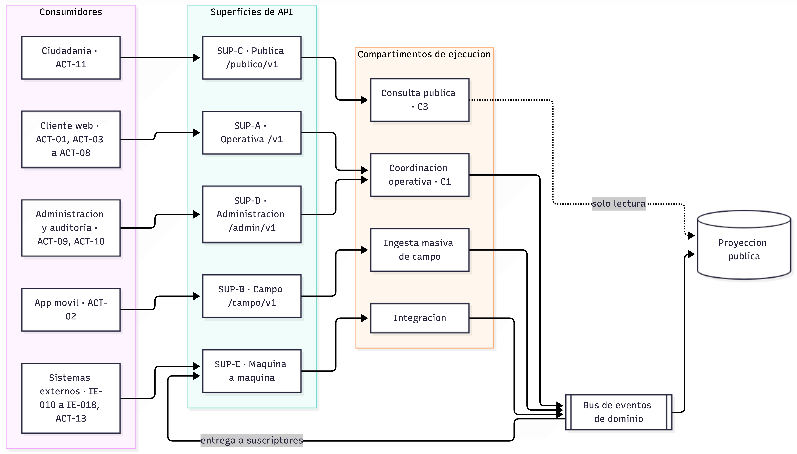
Convenciones
Versión
Versión mayor en la ruta (/v1/…); un cambio incompatible produce /v2/ y ambas conviven. La versión menor va en cabecera (DA-API-10).Identificador propio
Toda ruta usa el ID de la plataforma, nunca el del sistema fuente.Sub-recursos para hechos
/eventos/{id}/transiciones-estado: cada hecho exige motivo, autor y registro.Sobre de respuesta
Clave de idempotencia (toda escritura), correlación, versión de contrato, ID de operación, origen y marca de obtención, indicador de degradación y sensibilidad.Paginación por cursor
No por desplazamiento, cuyo costo crece con la profundidad y rompe los 2 s bajo EO-D. Los filtros no declarados dan ERR-04 y no se ignoran.Idempotencia en toda escritura
Repetir con el mismo contenido devuelve el resultado original; con contenido distinto, ERR-08 (409). En campo, la clave es el ID del dispositivo.Modelo de error
Un solo formato: código estable, mensaje legible, correlación, campo afectado y versión. Nunca contiene datos personales.
Presupuesto de latencia por clase
| Operación | Umbral | Origen |
|---|---|---|
| Lectura C1 (eventos, evaluaciones, recursos, tareas) | 2 s p95 | AC-REN-001 |
| Escritura C1 (registro de evento) | 3 s p95 | AC-REN-002 |
| Consulta espacial | 3 s p95 hasta 50 divisiones | AC-REN-006 |
| Ingesta externa hasta notificación | 30 s p95 | AC-REN-004 |
| Alerta crítica hasta el servicio externo | 5 s p95 | AC-REN-003 |
| Lote de 50 evaluaciones a 1 Mbps | 5 min | AC-REN-005 |
| Frescura de tablero | 30 s desde el hecho | RF-VIS-009 |
Catálogo de las 13 APIs
Filtra por API, verbo o texto. Ojo con las operaciones con segundo factor: asignaciones y cambios de presupuesto.
API-04 separada de API-03
Ambas escriben evaluaciones, pero la ingesta masiva de EO-D tiene receptor, cola y cupo propios (AC-RES-006).API-11: la auditoría no tiene DELETE
RF-AUD-004 exige que nadie pueda alterar un registro, ni siquiera el administrador; la forma de garantizarlo es que la operación no exista. La gestión de usuarios y roles es C1 aunque el resto de SUP-D sea C3: revocar durante una emergencia no puede depender de una función diferible.API-12: la ruta es el ID del catálogo
/ingesta/v1/{integracion}/mensajes: una integración nueva se da de alta en el catálogo y obtiene su ruta sin tocar el negocio (AC-INT-002).API-08: creación masiva asíncrona
EO-E crea 42 proyectos en una operación; una respuesta síncrona ataría al cliente al volumen (PRI-11).Eventos de dominio
Un evento es la notificación de un hecho ya ocurrido. Nombre con formato modulo.entidad.hecho.vN, ID propio de la entidad, momento del hecho (distinto del de publicación), actor y organismo, estados anterior y nuevo, visibilidad (interna o externa) y sensibilidad.
Reglas de publicación
- Publicación transaccional: el cambio y el evento en la misma transacción, también para eventos internos (DA-API-04).
- Al menos una vez: todo consumidor es seguro de reejecutar.
- Orden por entidad, no global.
- Consistencia final acotada a 30 s hasta los tableros.
- Sin datos personales en la carga: referencia y clasificación; el contenido se obtiene por la API (DA-API-06).
- Retención de 7 días en el bus, alineada con TAC-05.
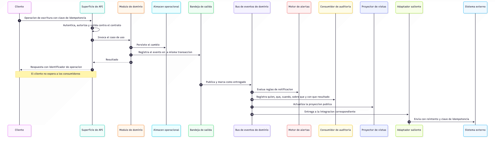
Matriz de operación, evento y efecto externo
| Operación | Evento | Efecto externo | Escenario |
|---|---|---|---|
| POST /ingesta/v1/IE-010/mensajes | EVT-01 | Notificación por IE-017 en menos de 30 s | EO-A |
| POST /v1/eventos/{id}/clasificaciones | EVT-04 | IE-017 y suscriptores ACT-13 | EO-A |
| POST /campo/v1/lotes | EVT-08, EVT-12 | Consolidado de daños y ACT-13 | EO-D |
| POST /v1/evaluaciones/{id}/validacion | EVT-09 | Habilita proyectos y derivación de recursos | EO-D, EO-E |
| POST /v1/asignaciones | EVT-16 | Salida a IE-013 por bandeja | EO-C |
| POST /v1/proyectos | EVT-24 | Salida a IE-015 e IE-016 | EO-E |
| POST /v1/proyectos/{id}/cambios-presupuesto | EVT-26 | IE-015 y traza inmutable | EO-E |
| GET /v1/recursos con IE-013 caído | — | Respuesta degradada desde caché | EO-C |
| Cualquier lectura pública | — | Desde la proyección, sin tocar el almacén | EO-B |
Contratos y seguridad de las interfaces
Registro de contratos: componente vivo que publica la versión vigente, las versiones en transición y la obsolescencia de cada interfaz y evento (GET /suscripciones/v1/contratos). Una versión mayor cubre una superficie completa. La versión de API y la de evento evolucionan por separado. Hay prueba de conformidad antes de operar.
Decisiones arquitectónicas
35 decisiones: 12 de integración (DA-INT), 10 de interfaces (DA-API) y 13 transversales (DA-ARQ). Por RST-008, todas citan atributos del SRS.
Mapa por atributo de calidad
Elige un atributo para ver qué decisiones lo sostienen. Sirve para evaluar el impacto de un cambio.
Decisiones transversales (DA-ARQ-01 a 13)
| ID | En una línea |
|---|---|
| DA-ARQ-01 | Un componente desplegable por módulo de dominio (14), con puertos y adaptadores internos. |
| DA-ARQ-02 | Cada módulo es dueño exclusivo de sus datos. |
| DA-ARQ-03 | Separación entre escritura y vistas de lectura (proyecciones). |
| DA-ARQ-04 | Cinco compartimentos de ejecución alineados con la criticidad. |
| DA-ARQ-05 | Comportamiento del dominio configurable en tiempo de ejecución. |
| DA-ARQ-06 | Persistencia por versiones y auditoría de solo agregación encadenada y sellada. |
| DA-ARQ-07 | Tres zonas activas más región secundaria en espera. |
| DA-ARQ-08 | Identidad federada con intermediario propio y credenciales de vida corta. |
| DA-ARQ-09 | Comunicación interna autenticada y cifrada, sin confianza por ubicación de red. |
| DA-ARQ-10 | Evidencias en almacenamiento de objetos separado, con carga reanudable. |
| DA-ARQ-11 | Escalado horizontal sin estado con capacidad base reservada. |
| DA-ARQ-12 | Despliegue progresivo con reversión automática. |
| DA-ARQ-13 | Observabilidad obligatoria en todo componente. |
Fichas completas, con contexto, alternativa descartada, costo y verificación:
Decisiones del modelo de integración (DA-INT)
Decisiones del diseño de interfaces (DA-API)
Estrategia de seguridad
La particularidad que condiciona todo: los usuarios necesitan la plataforma con más urgencia justo cuando el entorno es más hostil, con comunicaciones degradadas y personal de otros organismos que llega a última hora. Un control que bloquea sin alternativa en ese momento termina desactivado. Por eso cada control tiene una salida auditada, salvo los que protegen la integridad de la auditoría.
Activos y qué se protege de cada uno
| Activo | Propiedad prioritaria | Por qué |
|---|---|---|
| Datos personales de afectados | Confidencialidad | Población vulnerable; datos de salud de IE-012; Ley 1581 de 2012. |
| Registro de auditoría | Integridad | Rendición de cuentas; su valor desaparece si se puede alterar. |
| Capacidad de coordinación C1 | Disponibilidad | Sin ella los organismos coordinan a ciegas. |
| Evaluaciones validadas y evidencias | Integridad | Base de las asignaciones y los proyectos (RN-008). |
| Alertas emitidas | Integridad y autenticidad | Una alerta falsa moviliza organismos y población. |
| Configuración y catálogos | Integridad | Un cambio malicioso altera flujos sin tocar código. |
| Credenciales de integración y de servicio | Confidencialidad | Dan acceso a terceros y entre componentes. |
Principios (PSE)
Modelo de amenazas
Se identificaron recorriendo EO-A a EO-E y preguntando en cada paso qué pasaría si interviniera un actor malintencionado o un error humano.
Zonas de confianza (Z0 a Z5)
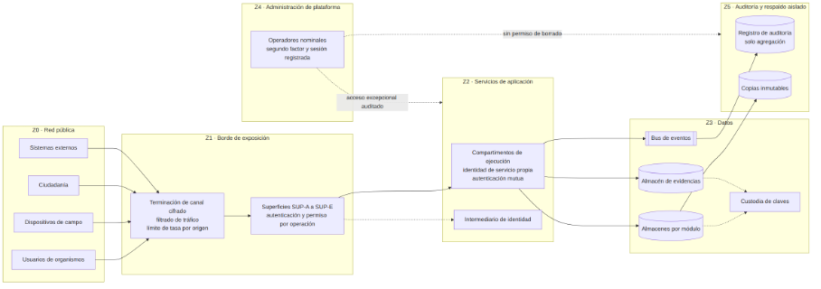
| Zona | Contenido | Control de paso |
|---|---|---|
| Z0 Red pública | Usuarios, dispositivos, ciudadanía, externos | Ninguno: todo se trata como no confiable. |
| Z1 Borde de exposición | Terminación cifrada, filtrado, las 5 superficies | Cifrado, límite por origen (CSI-29), permiso por operación (CSI-11). SUP-C admite lectura anónima. |
| Z2 Servicios | Compartimentos e intermediario de identidad | Identidad de servicio con autenticación mutua (CSI-18). |
| Z3 Datos | Almacenes, bus, evidencias, custodia de claves | Identidad de servicio, cifrado en reposo y por campo (CSI-20). |
| Z4 Administración | Operación, despliegue, diagnóstico | Segundo factor, sesión registrada, acceso a Z2 solo por excepción auditada. |
| Z5 Auditoría y respaldo | Registro de auditoría y copias inmutables | Nadie, ni Z4, puede borrar o modificar (CSI-25). |
Identidad, autenticación y autorización
Hay siete tipos de identidad, cada una con su mecanismo y su forma de revocarse: usuario federado (intermediario más segundo factor en operaciones críticas), usuario local (para organismos sin proveedor, SUP-002), ciudadano (no se autentica; solo SUP-C), dispositivo de campo (credencial vinculada al usuario, con borrado remoto), sistema externo (credencial propia, menos de 60 s para revocar), componente interno (identidad de servicio con rotación automática) y operador de plataforma (cuenta nominal con segundo factor).
Autorización en dos niveles: en la superficie (cada operación declara su permiso y se rechaza antes del dominio) y en el dominio (alcance por organismo derivado de la identidad). Ninguno sustituye al otro. Separación de funciones: quien solicita un cambio de presupuesto sobre el umbral no lo aprueba; el administrador de usuarios no lee datos personales ni toca la auditoría; el auditor solo lee; el operador de plataforma no tiene permisos de negocio.
Protección de los datos: 5 niveles
| Nivel | Ejemplos | Tratamiento |
|---|---|---|
| Pública | Agregados de SUP-C | Sin IDs internos reutilizables, con umbral mínimo de agregación (CSI-23). |
| Interna | Eventos, tareas, recursos, evaluaciones | Autenticación, permiso y alcance por organismo. |
| Restringida por organismo | Lo que un organismo marca como privado | Solo el dueño y quienes tengan compartición explícita. |
| Personal | Identificación y contacto | Cifrado por campo, enmascaramiento, revelación auditada (CSI-14), cuota (CSI-28). |
| Personal sensible | Salud, menores, vulnerabilidad | Lo anterior más roles con finalidad declarada y exclusión de exportaciones. |
El cifrado por campo usa claves distintas a las del almacén: quien obtenga una copia del almacén o de un respaldo no puede leer datos personales sin la custodia de claves. La recuperación de claves forma parte del plan de recuperación, porque un respaldo cuya clave se perdió es inservible. La supresión se hace por borrado criptográfico (CSI-22), pendiente de validación jurídica.
Integridad, dispositivo e incidentes
- Integridad: auditoría encadenada y sellada; resumen de cada evidencia calculado en el dispositivo y verificado en el servidor; alertas firmadas cuando el canal lo permite; cambios de flujo o niveles aprobados por una segunda persona (decisión derivada).
- Dispositivo de campo: es el único componente fuera de toda zona controlada. Tiene almacenamiento cifrado, desbloqueo aunque no haya red, vinculación al usuario, caducidad local (bloquea la consulta de datos personales pero permite capturar), revocación con borrado remoto y minimización. El SRS no le asignó requisitos propios (OBS-14).
- Incidentes: eventos de seguridad en un almacén separado; anomalías detectadas en menos de 15 min; severidades crítica, alta y media; reporte a la Superintendencia de Industria y Comercio cuando se comprometen datos personales (CSI-33).
- Desarrollo seguro: análisis estático y de dependencias, artefactos firmados, inventario de componentes y secretos fuera del código; vulnerabilidades altas corregidas en 15 días (AC-SEG-005).
Controles de la plataforma (CSI-18 a CSI-33)
Resiliencia y recuperación
Dos preguntas que suelen mezclarse. Resiliencia: ¿cómo sigue operando la plataforma mientras algo falla? Recuperación: ¿cómo vuelve a la normalidad y qué información rescata después?
Objetivos
Modelo de fallas (MF-01 a MF-13)
Tácticas de la plataforma (TAC-12 a TAC-22)
Topología de continuidad (DA-ARQ-07)
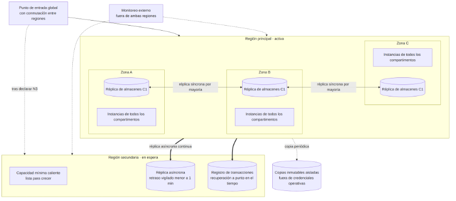
¿Por qué 3 zonas?
Con dos, perder una deja justo el 50 %, en el límite de AC-DIS-006, y la réplica por mayoría no funciona con dos participantes.¿Por qué no dos regiones activas?
Obligaría a resolver escrituras concurrentes sobre recursos, donde RN-009 prohíbe asignar dos veces, y sobre la cadena de auditoría, que no admite dos ramas.¿Por qué no una región con respaldos?
No alcanza los 30 minutos ante la pérdida de la región.Costo aceptado
Una región secundaria casi ociosa y hasta un minuto de datos perdidos al conmutar (se recupera en 19.7). Conmutar entre zonas es automático; entre regiones, una decisión humana.Réplica frente a respaldo
La réplica protege frente a la pérdida de infraestructura, pero copia igual de rápido un borrado accidental o un cifrado malicioso. El respaldo conserva estados anteriores. La estrategia combina: réplica síncrona entre zonas; réplica asíncrona regional; registro continuo de transacciones con ventana de 35 días; respaldo completo diario; copia inmutable semanal aislada de las credenciales operativas; copia de la auditoría con sus sellos (5 años); evidencias replicadas entre regiones con versionado; configuración exportada en cada cambio; y réplica de la custodia de claves. Un respaldo que nunca se restauró se considera no verificado: la restauración se prueba al menos cada semestre (AC-RCP-004).
Niveles de contingencia (N1 a N4)
| Nivel | Situación | Quién decide | Objetivo |
|---|---|---|---|
| N1 | Falla de instancia o componente | Nadie: automático | Menos de 2 min |
| N2 | Pérdida de una zona | Automático; operación confirma | C1 sin interrupción |
| N3 | Pérdida de la región principal | Responsable de continuidad | RTO 30 min, RPO 1 min |
| N4 | Corrupción extensa o ataque | Continuidad + seguridad | Definido por la organización (OBS-10) |
N3 se declara cuando la región no responde al monitoreo externo durante 5 minutos (valor de referencia) y operación no puede comprometer la recuperación dentro del RTO. Si la región vuelve a mitad de la conmutación, la conmutación continúa, porque revertirla dejaría a la plataforma sin ninguna región confiable.
Secuencia de restablecimiento N3: reprodúcela
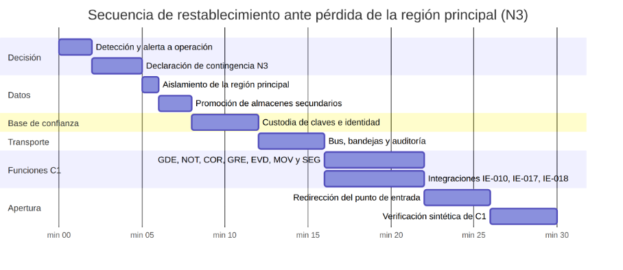
Roles: responsable de continuidad (declara N3 y N4), de operación (ejecuta y confirma N2), de seguridad (N4 y evidencia), de datos (valida lo restaurado y dirige la reconciliación) y enlace con organismos. El retorno a la región principal es planificado, fuera de una emergencia y en orden inverso.
Reconciliación posterior
| Fuente | Qué se recupera |
|---|---|
| Bandejas de salida | Se reenvía lo pendiente con su clave de idempotencia (AC-RCP-006). |
| Dispositivos de campo | Conservan lo confirmado durante 24 h; reenvían lo posterior a la última marca replicada. RN-013 evita duplicados. |
| Sistemas por sondeo | Retoman desde su marca de agua, que retrocede hasta la última replicada. |
| Sistemas por empuje | Lo del último minuto se puede perder si el emisor no reintenta; se pide reenvío y el resto queda como riesgo residual. |
| Auditoría | Se verifica la cadena; si falta un tramo, se agrega un registro de discontinuidad que lo declara, en lugar de dejar un salto sin explicar. |
| Proyecciones | Se reconstruyen (TAC-20). |
Estrategia de escalabilidad
La PGDR pasa de la calma a la emergencia en minutos, y la carga no crece de forma uniforme: primero se dispara la consulta ciudadana, luego la ingesta de campo y semanas después la reconstrucción. Escalar la plataforma entera para cada pico sería caro e inútil.
Perfiles de carga
| Perfil | Referencia | Origen |
|---|---|---|
| Operación normal | 1.000 usuarios concurrentes | AC-ESC-001 |
| Emergencia | 10.000 o más, alcanzados en minutos | AC-ESC-001, RST-004 |
| Ingesta de campo | 500 reportes/min con evidencias, coordinación degradada ≤ 10 % | AC-ESC-004 |
| Consulta pública | Hasta 10 veces la demanda operativa, sin afectar C1 | AC-ESC-005 |
| Alerta masiva | Entrega al servicio externo en menos de 5 s | AC-REN-003 |
| Almacenamiento | 10 veces el volumen del primer año sin rediseño | AC-ESC-006 |
Principios (PES)
Dimensiones de escalado por componente
| Componente | Cómo escala | Señal |
|---|---|---|
| Coordinación (SUP-A, SUP-D) | Instancias horizontales | Latencia p95 frente al presupuesto; saturación |
| Ingesta de campo (SUP-B) | Instancias + cola entre recepción y conciliación | Profundidad y edad del mensaje más antiguo |
| Evidencias | Trabajadores sobre cola; almacenamiento elástico con carga directa | Profundidad de cola; volumen |
| Consulta pública (SUP-C) | Caché en el borde y réplicas de la proyección | Tasa de peticiones y aciertos de caché |
| Bus de eventos | Particiones por ID de entidad (se sobredimensionan desde el inicio) | Retraso de los consumidores |
| Proyector | Un consumidor por partición | Retraso frente a 30 s |
| Motor de alertas | Trabajadores por canal y cola prioritaria | Profundidad de la cola crítica |
| Adaptadores | Instancias por adaptador con cupo propio | Profundidad por integración |
| Almacenes operacionales | Separación por módulo, réplicas de lectura, partición por evento y fecha | Saturación de escritura y conexiones |
| Auditoría | Solo agregación con partición temporal | Latencia de escritura |
| Procesamiento diferido | Trabajadores de baja prioridad, pausables | Se pausa en ND-1 y superiores |
Elasticidad
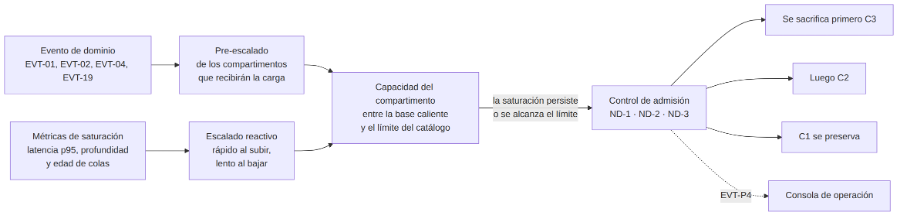
Capacidad base
Siempre activa, para atender el doble de la carga normal sin escalar. Absorbe el golpe mientras escala y permite cumplir el 20 % de AC-REN-007.Escalado reactivo
Por latencia p95, profundidad y edad de colas y conexiones, no solo CPU, porque un componente que espera a un almacén lento puede estar saturado con el procesador ocioso. Sube rápido y baja despacio, con 15 min de enfriamiento.Pre-escalado por eventos
La plataforma sabe antes que nadie cuándo llega la carga, porque ella registra el sismo. EVT-01, EVT-02 y EVT-04 escalan la consulta pública, las alertas y la coordinación; EVT-19 anticipa la ingesta de campo. Respeta el límite del catálogo.Control de admisión: pruébalo
Escalabilidad de los datos
- Evidencias en dos niveles: acceso inmediato para eventos activos; menor costo tras el cierre (EVT-05), conservando la referencia y el resumen. Así se absorbe el crecimiento de 10 veces con política, sin tocar el negocio.
- Almacenes particionados por evento y fecha; versiones históricas separadas de la vigente; índices espaciales en GEO (AC-REN-006).
- Auditoría particionada por periodo e indexada por evento, lo que permite el histórico de 100.000 registros en menos de 10 s (AC-TRZ-003).
- Bus y proyecciones: el bus retiene 7 días; las proyecciones son derivadas y no se respaldan con la misma exigencia.
Modelo de capacidad (incompleto a propósito)
El SRS fija cargas pero no los datos para traducirlas a capacidad (OBS-13). 500 reportes por minuto son unos 8 por segundo sostenidos; se dimensiona para ráfagas de tres veces porque los equipos sincronizan juntos al volver a la base. Faltan cuatro datos: fotos por reporte, tamaño tras compresión, canales por organismo y factor de ráfaga. Juega con la calculadora:
Evaluación ATAM
Architecture Tradeoff Analysis Method. Responde tres preguntas: ¿las decisiones alcanzan los umbrales del SRS?, ¿dónde dependen de un valor concreto? y ¿qué se gana y qué se pierde en cada decisión? No produce una nota, produce un mapa.
Los 9 pasos
| # | Paso | Resultado |
|---|---|---|
| 1 | Presentar el método | Cap. 2 |
| 2 | Controladores del negocio | Cap. 3: 7 objetivos de negocio |
| 3 | Presentar la arquitectura | Cap. 4 |
| 4 | Identificar enfoques | EA-01 a EA-16 |
| 5 | Árbol de utilidad | 26 escenarios con (I, D) |
| 6 | Analizar enfoques | Fichas (A, A) y (A, M) |
| 7 | Lluvia de ideas con interesados | Simulado: sin sesión real, derivado de SUP-001 a SUP-008. Se declara como limitación. |
| 8 | Reanalizar | ESC-21 a ESC-26 |
| 9 | Presentar resultados | Cap. 9–12 |
Controladores del negocio
Criterio de juicio: la arquitectura acierta si mantiene la coordinación viva cuando el entorno se degrada y si incorporar un sistema o un tipo de evento nuevo no obliga a rehacer el núcleo.
RST-001, AC-INT-*
AC-DIS-001, AC-ESC-001
AC-DIS-004, EO-C
AC-TRZ-*, RN-007
AC-SEG-004, RST-012
AC-MOD-*
RF-REC-*, EO-E
Tres restricciones condicionan la evaluación: RST-009 (sin tecnología, así que los valores de referencia se tratan como parámetros a validar), RST-008 (toda decisión justificada) y RST-011 frente a RST-012, que tiran en sentidos opuestos en el dispositivo móvil.
Enfoques arquitectónicos (EA-01 a EA-16)
Se identificaron leyendo el capítulo 17 del SAD al revés: partiendo de la forma repetida que comparten varias decisiones.
Tres encadenamientos que explican las respuestas
Continuidad frente al exterior
EA-01 (el núcleo no conoce al externo) + EA-08 (se acota la mala respuesta) + EA-09 (qué se muestra mientras tanto). Si falta uno, la caída del hospital llega a la sala de crisis.Escalabilidad diferencial
EA-07 (compartimentos) + EA-14 (crecer solo lo presionado) + EA-06 (sacar las lecturas del camino). Sin compartimentos, escalar lo público consumiría la coordinación.Integridad de lo confirmado
EA-05 (hecho y propagación juntos) + EA-12 (sobrevive a la pérdida de zona) + EA-11 (queda registro de quién). Todo para reconstruir después lo decidido.Árbol de utilidad
Pares (importancia, dificultad). A importancia: afecta C1. A dificultad: depende de varias decisiones o de supuestos externos. Se analizan en detalle los (A, A) y (A, M). Toca un escenario:
Fichas de análisis
Formato de seis partes más enfoques, razonamiento, riesgos, no riesgos, sensibilidad, compromisos y verificación.
Resultados
Cobertura
Lo más barato de verificar: la modificabilidad (contar componentes modificados) y la interoperabilidad (ejercicio de integración sin infraestructura). La escalabilidad queda bloqueada por falta del modelo de capacidad. ESC-14 no es verificable hasta que exista la política de conflictos. Quedaron sin escenario la usabilidad (AC-USA), AC-SEG-005, AC-SEG-006 y la observabilidad propia, por decisión de alcance.
Conclusión del ATAM
Insumos listos para la segunda entrega: los puntos de sensibilidad (parámetros que la tecnología debe fijar), los de compromiso (conversaciones pendientes con el cliente) y la tabla de cobertura (orden del plan de pruebas).
Vacíos que el propio SAD reconoció (OBS)
Simuladores
Mecanismos de la arquitectura que puedes manipular. Úsalos para explicar con tus palabras qué pasa y por qué.
Escenarios operacionales paso a paso
Explorador de trazabilidad
RST-008 obliga a que toda decisión cite un atributo; el ATAM recorre la cadena al revés. Aquí puedes hacer lo mismo: elige un atributo y verás sus requisitos, las decisiones que lo sostienen, las tácticas, los escenarios ATAM y los riesgos.
Decodificador de IDs
Escribe cualquier identificador (RF-EVD-018, AC-RES-006, CSI-24, EVT-P4, PS-04…) y verás su definición, el documento y quién lo menciona.
Guion de sustentación
Un bloque por grupo de diapositivas, con tiempo objetivo, ideas clave y una frase para decir. Activa el cronómetro y practica en voz alta; el bloque actual se resalta según el tiempo.
Preguntas difíciles del jurado
Practica respondiendo en voz alta antes de abrir la respuesta. Marca las que ya dominas.
Puntos débiles y cómo defenderlos
| Punto débil | Cómo defenderlo |
|---|---|
| No hay política de resolución de conflictos (RSG-02) | La arquitectura detecta el conflicto (versionado más idempotencia) y nunca sobrescribe en silencio. Qué versión prevalece es una regla de negocio que debe decidir el cliente (PRG-07, R-01). |
| El IdP es una dependencia síncrona C1 (RSG-01) | DA-ARQ-08 reduce el problema al primer inicio de sesión: las sesiones vigentes siguen. Hay cuentas locales, varios proveedores y acceso de excepción auditado. Falta una decisión formal (R-04). |
| 99,95 % frente a 30 min de conmutación (RSG-07) | Reconocido en el SAD 19.1: por eso todo lo ordinario es automático y sin interrupción, y N3 queda reservado a la catástrofe. Es la pregunta PRG-08 al cliente. |
| Los diagramas no coinciden con el texto (RSG-04, RSG-17, RSG-23) | El texto del SAD es la fuente normativa (5 superficies, 5 compartimentos, 3 zonas). R-02 reconcilia el 4+1. |
| No hay modelo de capacidad (RSG-05) | El cálculo está planteado (SAD 20.7); faltan cuatro datos que solo tiene la organización. Ejemplo: a 1 Mbps, 50 fotos en 5 min exigen menos de unos 700 kB por foto. |
| Configuración en caliente sin ensayo (RSG-10) | Compromiso PC-13 aceptado para cumplir AC-MOD-001. Ya se exige auditoría, aprobación por segunda persona y que un flujo en curso conserve su versión. Falta un ambiente de ensayo y reversión (R-06). |
| Todo depende de personas en N3 (RSG-08, RSG-21) | Es deliberado para proteger la integridad (PC-10). Falta documentar turnos y tamaño del equipo (R-07, PRG-01). |
| El paso 7 de ATAM fue simulado | Se declaró como limitación del método; los escenarios salieron de los supuestos, que son los puntos de dependencia de terceros. |